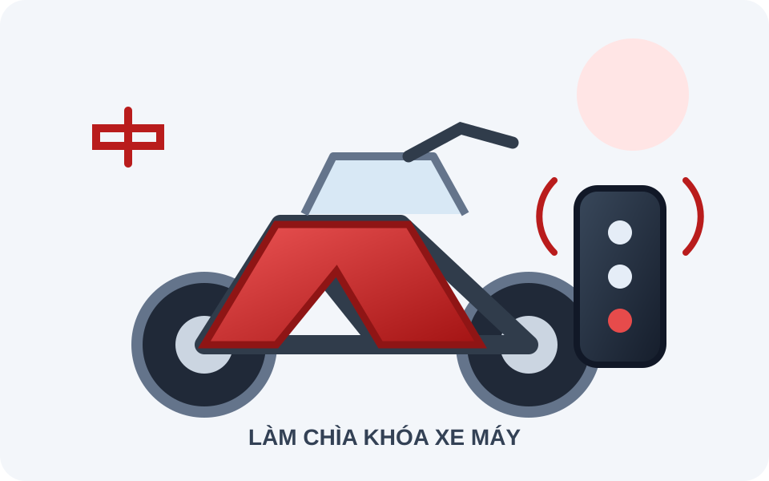

Mất hết chìa khóa xe máy tại Cẩm Phả: cần chuẩn bị gì?

Mất toàn bộ chìa khóa xe máy có thể khiến bạn chưa biết nên bắt đầu từ đâu. Việc làm lại phụ thuộc vào loại khóa, hãng xe, đời xe và tình trạng hệ thống hiện tại. Trước khi liên hệ thợ, bạn nên ghi lại một số thông tin để trao đổi đúng nhu cầu và tránh tự xử lý gây hư hỏng.
1. Xác định loại chìa khóa của xe
- Chìa cơ: cho biết xe dùng chìa cơ thông thường hay có chip từ nếu bạn biết.
- Smartkey: cho biết xe dùng núm xoay và remote, đồng thời nói rõ đã mất tất cả remote hay vẫn còn một chiếc.
- Xe máy điện: cung cấp hãng, mẫu xe và dạng chìa hoặc remote đang sử dụng.
Nếu không chắc xe thuộc loại nào, bạn có thể mô tả đặc điểm hoặc gửi hình ảnh xe và bộ khóa khi trao đổi. Không cần tự tháo mặt nạ hay cụm khóa để tìm thông tin.
2. Chuẩn bị thông tin xe và vị trí
- Hãng xe, tên dòng xe và đời xe nếu nhớ.
- Vị trí xe đang để tại Cẩm Phả hoặc khu vực lân cận.
- Xe còn hoạt động bình thường trước khi mất chìa hay đã có dấu hiệu lỗi khóa.
- Thông tin chìa dự phòng: còn, đã mất hết hay không rõ.
Chuẩn bị giấy tờ xe hoặc thông tin phù hợp để xác minh quyền sử dụng xe khi cần. Đây là bước quan trọng nhằm bảo đảm việc hỗ trợ được thực hiện đúng chủ xe.
3. Không nên tự đấu nối hoặc can thiệp hệ thống khóa
Không nên tự cắt dây, đấu tắt ổ khóa, tháo cụm Smartkey hoặc thử các cách vô hiệu hóa chống trộm khi không có chuyên môn. Những thao tác này có thể gây chập điện, phát sinh lỗi hoặc làm việc khắc phục phức tạp hơn.
Nếu xe đang ở nơi không an toàn, hãy ưu tiên đưa người và xe đến vị trí phù hợp bằng phương án vận chuyển an toàn; không cố vận hành xe khi chưa thể khởi động đúng cách.
4. Hỏi rõ phương án và chi phí trước khi làm
Khả năng làm lại chìa khi mất hết phụ thuộc từng mẫu xe và hệ thống khóa. Khi gọi, hãy đề nghị trao đổi trước về khả năng hỗ trợ, giấy tờ cần chuẩn bị, phương án dự kiến, chi phí và thời gian di chuyển. Chỉ đồng ý thực hiện sau khi đã hiểu rõ các nội dung này.
5. Liên hệ làm chìa khóa xe máy tại Cẩm Phả
THỢ KHÓA LƯU ĐỘNG tiếp nhận yêu cầu trao đổi về làm chìa khóa xe máy tại Cẩm Phả. Với từng dòng xe, đặc biệt là Smartkey và xe máy điện, khả năng hỗ trợ cần được xác nhận trước dựa trên thông tin thực tế.
Xem thêm dịch vụ làm chìa khóa xe máy, hướng dẫn Smartkey xe máy không nhận chìa, thông tin làm chìa khóa xe máy điện VinFast hoặc thợ khóa tại Cẩm Phả.
Câu hỏi thường gặp
Mất hết chìa khóa xe máy có làm lại được không?
Tùy hãng xe, đời xe và loại hệ thống khóa. Hãy cung cấp thông tin xe để trao đổi khả năng hỗ trợ trước khi thực hiện.
Mất hết remote Smartkey có cần thay cả bộ khóa không?
Không thể kết luận khi chưa xác định đúng mẫu xe và tình trạng hệ thống. Nên kiểm tra thông tin xe và hỏi rõ phương án, chi phí trước khi quyết định.
Khi gọi thợ cần cung cấp gì?
Hãy cho biết hãng xe, dòng xe, đời xe nếu biết, vị trí xe, loại khóa và việc bạn đã mất tất cả chìa hay chưa.